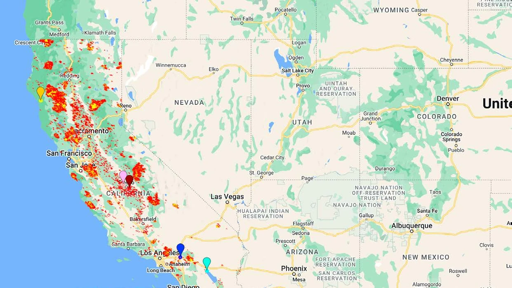
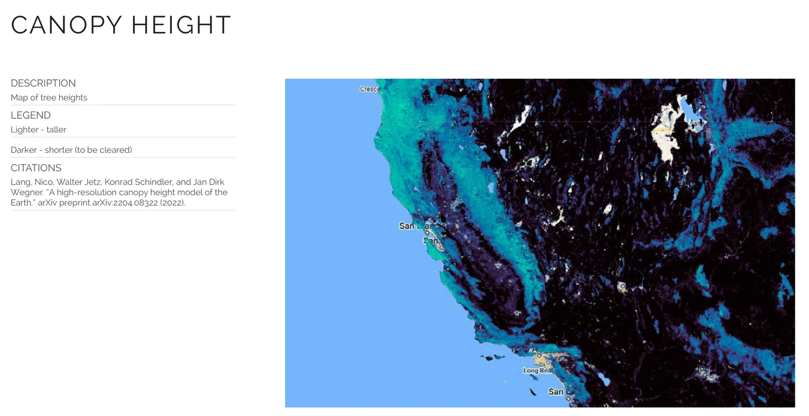

Case study / Hackathon
SpaceHACK for Sustainability
Interplanetary Initiative hackathon at ASU (March 2023). Our team received an Honorable Mention in the Wildfire Risk and Social Disparity at the Wildland Urban Interface track.
Working across four engineering and design disciplines, we combined satellite observations of wildfire activity and forest structure with socioeconomic data to explore wildfire vulnerability in the western United States. We proposed selective forest thinning and biomass reuse as potential environmental and community interventions.
- Status
- Hackathon concept, Honorable Mention (March 2023).
- Role
- Researcher and analyst
- Team
- Four students, from human systems engineering (me), computer science, civil engineering, and architecture
- Tools
- Mine: Google Earth Engine (JavaScript). The team's: MODIS active-fire detections, a canopy-height model, a ZIP-code income ranking, Planet imagery, ChatGPT
01
The question
The track asked where wildfire risk and socioeconomic vulnerability meet at the wildland-urban interface, where human development meets or intermixes with wildland vegetation. We split it into two questions: how to reduce forest fire severity, and how to support lower-income communities. Our proposal drew on research documenting increased densities of small trees in Sierra Nevada forests, with historical fire suppression identified as an important contributing factor (Dolanc et al., 2014).
02
Team research visualizations
Two of the team's maps show what we explored. One placed satellite fire detections alongside five ZIP codes identified through a third-party income ranking: an exploratory spatial comparison that did not quantify wildfire exposure or test its association with income. For context, a study of California wildfires from 2000 to 2020 using census-tract data found disproportionate impacts on low-income communities (Masri et al., 2021). The other used canopy-height data as a potential tool for identifying vegetation-management priorities.


03
Proposed solutions
We tied forest thinning to circular-economy uses for the removed biomass. The team considered biochar, composting, biomass energy, and biofiltration as potential applications that could connect vegetation management with local environmental and economic needs. These concepts were not subjected to feasibility testing, cost analysis, or impact evaluation.
04
Contribution and reflection
As the team's researcher and analyst, I used JavaScript in Google Earth Engine to filter, process, and examine satellite-derived wildfire observations. My work contributed to the team's exploration of temporal wildfire patterns in California and Arizona.
SpaceHACK was my introduction to GIS and satellite-based environmental analysis. Collaborating with students from three other disciplines showed me how different perspectives could expand the range of solutions considered. It also introduced me to a distinction I appreciate more clearly today: identifying environmental patterns is not the same as establishing the causes of risk or determining an effective intervention. Moving from observation to action requires additional evidence, particularly when the proposed solution affects people and ecosystems.
References
- Dolanc, C. R., Safford, H. D., Thorne, J. H., & Dobrowski, S. Z. (2014). Changing forest structure across the landscape of the Sierra Nevada, CA, USA, since the 1930s. Ecosphere, 5(8), Article 101. https://doi.org/10.1890/ES14-00103.1
- Lang, N., Jetz, W., Schindler, K., & Wegner, J. D. (2023). A high-resolution canopy height model of the Earth. Nature Ecology & Evolution, 7(11), 1778–1789. https://doi.org/10.1038/s41559-023-02206-6
- Masri, S., Scaduto, E., Jin, Y., & Wu, J. (2021). Disproportionate impacts of wildfires among elderly and low-income communities in California from 2000–2020. International Journal of Environmental Research and Public Health, 18(8), Article 3921. https://doi.org/10.3390/ijerph18083921
- NASA FIRMS. (n.d.). MODIS Collection 6 NRT Hotspot/Active Fire Detections MCD14DL [Data set]. NASA Fire Information for Resource Management System. https://doi.org/10.5067/FIRMS/MODIS/MCD14DL.NRT.006
- Zip Data Maps. (n.d.). Poorest zip codes in California [Data set]. zipdatamaps.com